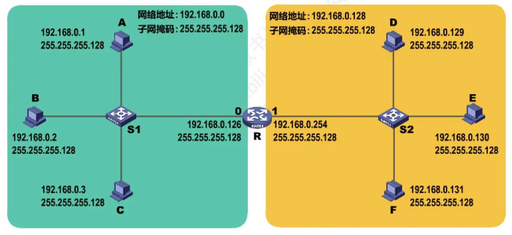
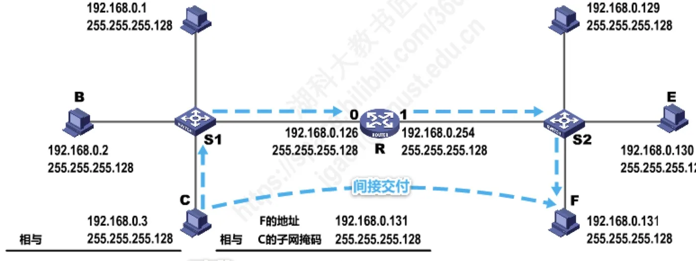
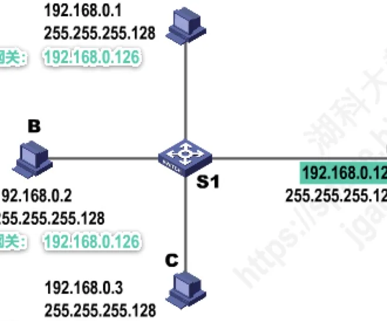
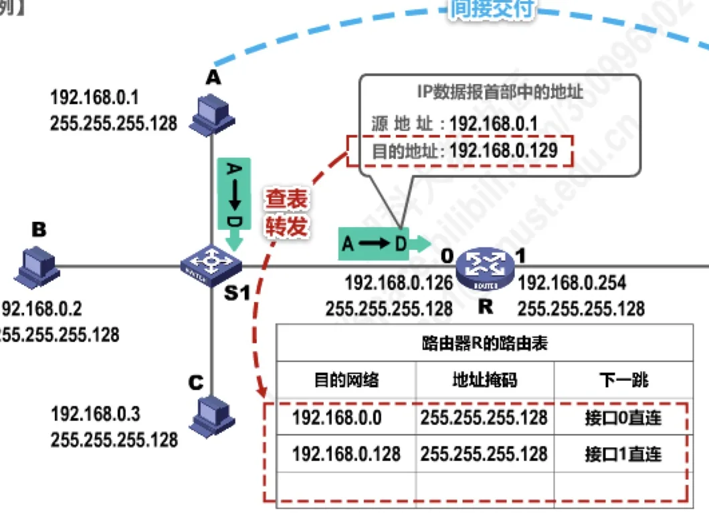
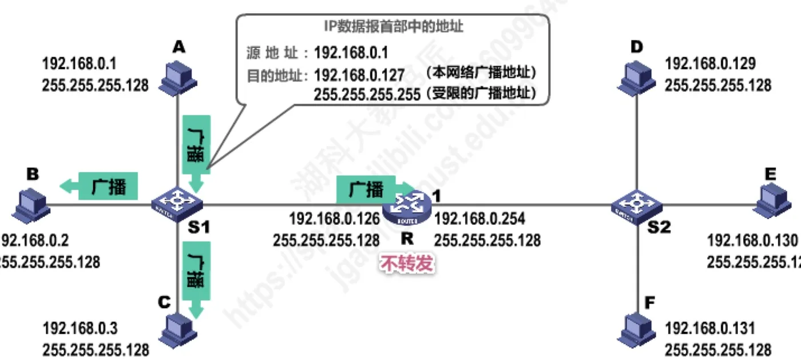
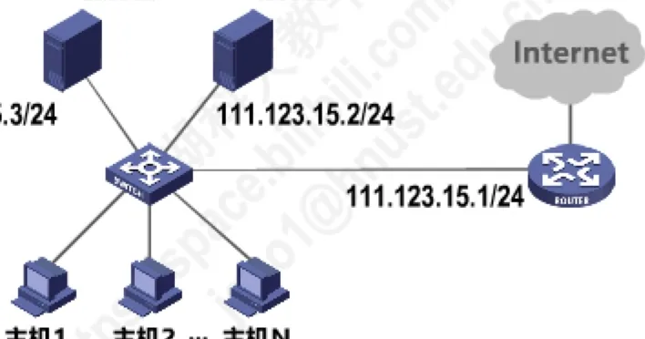

计算机通信与网络 · 第 4 章 网络层
4.4 IP数据报的发送和转发过程
前面几节弄清了地址怎么表示、怎么划分、怎么分配，这一节看它们怎么用起来：一个 IP 数据报从源主机出发，怎样判断该直接送到目的主机、还是交给路由器，路由器收到之后又按什么规则转发出去。这条路径上的每一步都由地址和子网掩码决定，理解它也就理解了「网际层的转发」到底做了什么、以及在广播和差错面前路由器为什么无能为力。
1. 发送与转发：两个环节
IP 数据报的发送和转发过程包含以下两部分：
- 主机发送 IP 数据报——源主机判断目的主机是否与自己处在同一个网络中，决定是直接交付还是交给默认网关；
- 路由器转发 IP 数据报——路由器收到数据报后检查首部、查路由表，决定从哪个接口送出去。
为了把重点放在 TCP/IP 协议栈网际层的发送和转发过程上，之后的举例都忽略两件事：使用 ARP 协议来获取目的主机或路由器接口的 MAC 地址的过程，以及以太网交换机自学习和转发帧的过程。也就是说，本节只关心 IP 层怎么决策，不关心帧在链路层怎么走。
以下的举例都基于同一个网络拓扑：一个 C 类地址块 192.168.0.0 被划分为两个子网，都用子网掩码 255.255.255.128（即 /25）。左侧子网 192.168.0.0/25 中有主机 A（192.168.0.1）、B（192.168.0.2）、C（192.168.0.3），经交换机 S1 接入路由器 R 的接口 192.168.0.126；右侧子网 192.168.0.128/25 中有主机 D（192.168.0.129）、E（192.168.0.130）、F（192.168.0.131），经交换机 S2 接入路由器 R 的另一个接口 192.168.0.254。

2. 主机发送 IP 数据报
（1）怎样判断目的主机是否与自己同在一个网络
源主机要回答的第一个问题是：目的主机是否与自己在同一个网络中？做法是把本机的子网掩码与目的主机的 IP 地址相与，得到目的网络地址，再与自己的网络地址比较，看两者是否相等。
以主机 C 给主机 F 发送数据报为例：C 的地址是 192.168.0.3，子网掩码 255.255.255.128，F 的地址是 192.168.0.131。用掩码与 F 的地址相与，得到 192.168.0.128；而 C 所在网络的网络地址是 192.168.0.0——两者不相等，说明目的主机与源主机不在同一个网络中。反过来，如果 C 要把数据报发给同一个子网里的主机 B（192.168.0.2），相与的结果就是 192.168.0.0，与本网络地址相同，说明两者在同一网络内。

（2）直接交付与间接交付
- 若目的主机与自己在同一个网络，则属于直接交付——数据报直接送到目的主机；
- 若不在同一个网络，则属于间接交付——数据报传输给主机所在网络的默认网关（路由器），由默认网关帮忙转发。
（3）默认网关
那么主机怎么知道路由器 R 的存在？靠的是本机配置中的默认网关。默认网关就是主机所在网络中路由器接口的 IP 地址：本拓扑中左侧子网的主机 A、B、C 把默认网关配置为 192.168.0.126（R 的接口 0），右侧子网的主机 D、E、F 把默认网关配置为 192.168.0.254（R 的接口 1）。凡是目的网络不是本机所在网络的数据报，一律先交给默认网关，再由它继续转发。

3. 路由器转发 IP 数据报
默认网关收到数据报后，按两步处理：
- 第一步，检查 IP 数据报首部是否出错：若出错，则直接丢弃该 IP 数据报并通告源主机；若没有出错，则进行转发；
- 第二步，根据 IP 数据报的目的地址在路由表中查找匹配的条目：若找到匹配的条目，则转发给条目中指示的下一跳；若找不到，则丢弃该 IP 数据报并通告源主机。
本例中路由器 R 的路由表只有两条记录，因为它的两个接口分别直连着一个子网：
| 目的网络 | 地址掩码 | 下一跳 |
|---|---|---|
| 192.168.0.0 | 255.255.255.128 | 接口 0 直连 |
| 192.168.0.128 | 255.255.255.128 | 接口 1 直连 |
以主机 A 给主机 D 发送数据报为例，看整个过程的完整链条：
IP 数据报首部：
源 192.168.0.1，目的 192.168.0.129
A：掩码 255.255.255.128 与目的地址相与
得 192.168.0.128 ≠ A 的网络地址 192.168.0.0
→ 间接交付，交给默认网关 192.168.0.126
R：查首部无差错，相与得 192.168.0.128
与路由表第二行匹配 → 从接口 1 转发，到达主机 D值得注意的是：在整个过程中，IP 数据报首部中的源地址和目的地址始终没有改变——源地址一直是 192.168.0.1，目的地址一直是 192.168.0.129。路由器只根据目的地址查表转发，它并不改写这两个地址，改变的只是承载数据报的帧在不同链路上的封装。

4. 广播分组：路由器为什么不转发
如果主机 A 发送的数据报是广播分组，情况就不同了。原讲义给出了三种广播地址的用法，它们都只在本网络内起作用，路由器一律不转发：
- 目的地址为 192.168.0.127，这是子网 192.168.0.0/25 的广播地址（主机号全 1），本网络内广播；
- 目的地址为 255.255.255.255，这是受限的广播地址，同样只在本网络内广播；
- 目的地址为 192.168.0.255，这是子网 192.168.0.128/25 的广播地址，也只有该子网内的主机会收到。
所以广播分组无论目的地址写成上述哪一种，都止步于路由器，不会扩散到另一个子网去（图 5）。

正是「路由器不转发广播」这一特性，使它在网络设备中显得特别：广播分组无法越过路由器，广播风暴也就被限制在一个网络之内。原讲义用 2010 年的一道真题来比较各类设备的这个能力：下列网络设备中，能够抑制广播风暴的是——I. 中继器，II. 集线器，III. 网桥，IV. 路由器；A. 仅 I 和 II，B. 仅 I，C. 仅 I 和 IV，D. 仅 IV。答案是 D。
| 设备 | 层次 | 隔离冲突域 | 隔离广播域 |
|---|---|---|---|
| 中继器、集线器 | 物理层 | 不可以 | 不可以 |
| 网桥、交换机（多端口网桥） | 数据链路层 | 可以 | 不可以 |
| 路由器 | 网络层 | 可以 | 可以 |
5. 路由器的职责边界
路由器转发分组时做的事不少，但它并不负责可靠传输。原讲义用 2012 年的一道真题来澄清这一点：下列关于 IP 路由器概念的描述中，正确的是——I. 运行路由协议，设置路由表；II. 监测到拥塞时，合理丢弃 IP 分组；III. 对收到的 IP 分组头进行差错校验，确保传输的 IP 分组不丢失；IV. 根据收到 IP 分组的目的 IP 地址，将其转发到合适的输出线路上。选项是 A. 仅 I、IV，B. 仅 I、II、III，C. 仅 I、II、IV，D. I、II、III、IV，答案是 C。
关键在描述 III 上：IP 路由器工作在 TCP/IP 体系结构的网际层（或称 IP 层），而网际层并不负责可靠传输，也就是不能确保传输的 IP 分组不丢失。准确的说法是：IP 路由器对收到的 IP 分组头进行差错校验，当发现错误时会丢弃该 IP 分组，并向源主机发送 ICMP 差错报告报文（类型为参数错误）——是「发现错误就丢并报告」，而不是「保证不丢」。所以描述 III 错误，其余三项都是路由器的正常职责。
6. 综合应用：主机能否访问 WWW 服务器与 Internet
把上面的判断方法用到具体配置上，就是原讲义选用的 2015 年题 47。网络拓扑如图 6：路由器内网接口为 111.123.15.1/24，WWW 服务器为 111.123.15.3/24，DHCP 服务器为 111.123.15.2/24，主机 1 为 111.123.15.4/24（静态配置），主机 2～主机 N 通过 DHCP 动态获取配置。题目问：若主机 1 的子网掩码和默认网关分别配置为 255.255.255.0 和 111.123.15.2，则该主机是否能访问 WWW 服务？是否能访问 Internet？

结论是：主机 1 可以访问 WWW 服务器，但不能访问 Internet。理由分两层：
- 主机 1 使用的子网掩码 255.255.255.0 与网络前缀 /24 一致，从 IP 地址与子网掩码配置以及物理连接方面看，主机 1（111.123.15.4）和 WWW 服务器（111.123.15.3）处在同一网络中，所以访问 WWW 服务器属于直接交付，可以成功；
- 主机 1 的默认网关被错误地配置成了 DHCP 服务器的 IP 地址 111.123.15.2（正确的应当是路由器内网接口 111.123.15.1）。访问 Internet 属于间接交付，数据报会被交给默认网关，而 DHCP 服务器不具备路由器功能，无法把 IP 分组转发到 Internet，因此访问失败。
这个例子把本节的两条线索串了起来：子网掩码决定「是不是同一个网络」，默认网关决定「不在同一个网络时交给谁」。两者任何一个配置错误，都会让主机在某些方向上通、在另一些方向上不通。
本节小结
- IP 数据报的发送和转发分两部分：主机发送 IP 数据报，路由器转发 IP 数据报；讨论时忽略 ARP 获取 MAC 地址与交换机转发帧的过程，只关注网际层的决策。
- 主机用本机子网掩码与目的 IP 地址相与得到目的网络地址，与本网络地址比较：相同则直接交付，不同则间接交付，交给默认网关。
- 默认网关是主机所在网络中路由器接口的地址，例如左侧子网配置 192.168.0.126、右侧子网配置 192.168.0.254。
- 路由器收到数据报后先检查首部是否出错（出错则丢弃并通告源主机），再按目的地址查路由表（找到则转发给下一跳，找不到则丢弃并通告源主机）；转发过程中源地址和目的地址都不改变。
- 本网络广播地址（如 192.168.0.127）、受限广播地址 255.255.255.255 以及指向某网络的广播地址（如 192.168.0.255），路由器一律不转发；因此只有路由器能隔离广播域，中继器、集线器、网桥和交换机都不能。
- 路由器工作在网际层，只做首部差错校验并在出错时丢弃、发送 ICMP 差错报告报文，并不保证 IP 分组不丢失。
- 配置是否正确的判断标准：子网掩码决定目的主机是否与本机同网，默认网关决定不同网时交给谁；2015 年题 47 中主机 1 因默认网关误配为 DHCP 服务器地址而无法访问 Internet。